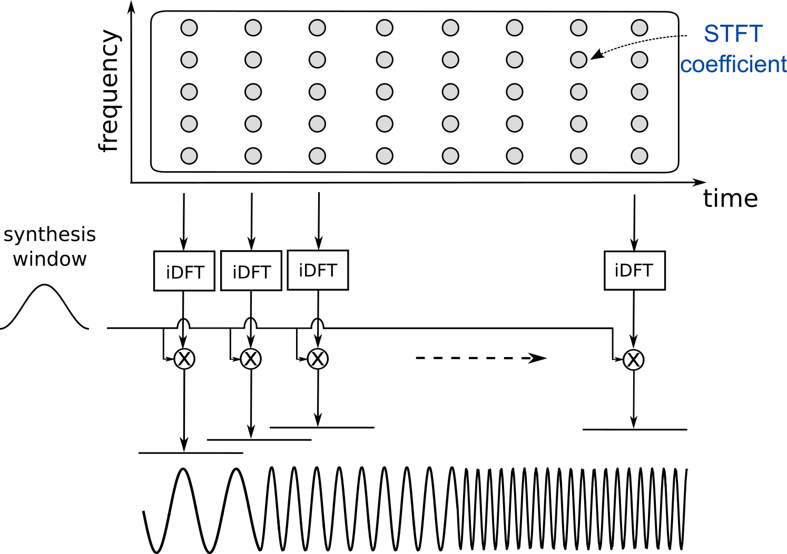

class: middle, center <!--- https://katex.org/docs/supported.html#macros ---> $$ \global\def\myx#1{{\color{green}\mathbf{x}\_{#1}}} $$ $$ \global\def\mys#1{{\color{green}\mathbf{s}\_{#1}}} $$ $$ \global\def\myz#1{{\color{brown}\mathbf{z}\_{#1}}} $$ $$ \global\def\myhnmf#1{{\color{brown}\mathbf{h}\_{#1}}} $$ $$ \global\def\myztilde#1{{\color{brown}\tilde{\mathbf{z}}\_{#1}}} $$ $$ \global\def\myu#1{\mathbf{u}\_{#1}} $$ $$ \global\def\mya#1{\mathbf{a}\_{#1}} $$ $$ \global\def\myv#1{\mathbf{v}\_{#1}} $$ $$ \global\def\mythetaz{\theta\_\myz{}} $$ $$ \global\def\mythetax{\theta\_\myx{}} $$ $$ \global\def\mythetas{\theta\_\mys{}} $$ $$ \global\def\mythetaa{\theta\_\mya{}} $$ $$ \global\def\bs#1{{\boldsymbol{#1}}} $$ $$ \global\def\diag{\text{diag}} $$ $$ \global\def\mbf{\mathbf} $$ $$ \global\def\myh#1{{\color{purple}\mbf{h}\_{#1}}} $$ $$ \global\def\myhfw#1{{\color{purple}\overrightarrow{\mbf{h}}\_{#1}}} $$ $$ \global\def\myhbw#1{{\color{purple}\overleftarrow{\mbf{h}}\_{#1}}} $$ $$ \global\def\myg#1{{\color{purple}\mbf{g}\_{#1}}} $$ $$ \global\def\mygfw#1{{\color{purple}\overrightarrow{\mbf{g}}\_{#1}}} $$ $$ \global\def\mygbw#1{{\color{purple}\overleftarrow{\mbf{g}}\_{#1}}} $$ $$ \global\def\neq{\mathrel{\char`≠}} $$ # The Audio Spectrogram .vspace[ ] .center[Simon Leglaive] .vspace[ ] .small.center[2D-3D Image & Sound, CentraleSupélec] --- class: middle ## Organization 3 introductory lessons to audio processing 1. Spectrogram representation of audio signals 2. Speech production and modeling 3. Spatial audio **Global objective**: To give you the basic tools to understand and analyze audio signals. --- class: middle, center ## Spectrograms .tiny[(or spectrogram-like representations)] are everywhere --- class: middle ## Speech-to-text .center.width-50[] .credit[Image credits: O. Abdel-Hamid et al., [Convolutional neural networks for speech recognition](https://ieeexplore.ieee.org/document/6857341), IEEE/ACM Transactions on audio, speech, and language processing, 2014.] --- class: middle ## Text-to-speech .center.width-50[] .caption[A detailed look at Tacotron 2's model architecture. The lower half of the image describes the sequence-to-sequence model that maps a sequence of letters to a spectrogram. For technical details, please refer to [the paper](https://arxiv.org/abs/1712.05884).] .credit[Image credits: J. Shen and R. Pang, [Tacotron 2: Generating Human-like Speech from Text](https://ai.googleblog.com/2017/12/tacotron-2-generating-human-like-speech.html), Google AI Blog, 2017.] --- class: middle ## Melody extraction in music .center.width-90[] .credit[Image credits: J. Salamon et al., [Melody extraction from polyphonic music signals: Approaches, applications, and challenges](https://ieeexplore.ieee.org/document/6739213), IEEE Signal Processing Magazine, 2014.] --- class: middle ## Automatic music transcription .grid[ .kol-2-3[.left.width-90[]] .kol-1-3[.width-100[]] ] .credit[Image credits: E. Benedetos et al., [Automatic Music Transcription: An Overview](https://www.semanticscholar.org/paper/Automatic-Music-Transcription%3A-An-Overview-Benetos-Dixon/b0a4c24d1bc96d71402fc8668a823c43d8bc47dc), IEEE Signal Processing Magazine, 2019.] --- class: middle ## Urban sound analysis .grid[ .kol-1-2[.width-90[]] .kol-1-2[.left.width-90[]] ] .credit[Image credits: Left: [Sounds of New York City](https://wp.nyu.edu/sonyc/) Right: T. Heittola et al., [The machine learning approach for analysis of sound scenes and events](), in Computational Analysis of Sound Scenes and Events, Springer, 2018. ] --- class: middle ## Bird calls detection .center.width-80[] .credit[Image credits: V. Lostanlen et al., [Robust Sound Event Detection in Bioacoustic Sensor Networks](https://journals.plos.org/plosone/article/file?id=10.1371/journal.pone.0214168&type=printable), PLoS ONE, 2019.] --- class: middle ## Gravitational astronomy .center.width-80[] .caption[Gravitational Wave Chirp Spectrogram] This spectrogram combined the signals from both Hanford and Livingston detectors to show the characteristic sweeping chirp. As the neutron stars came closer to each other, circling faster, they produced higher frequency gravitational waves shown by the greenish line sweeping upwards. .credit[Image credits: Caltech/MIT/LIGO Lab, https://www.ligo.caltech.edu/news/ligo20171016] --- class: middle ## Electroencephalography (EEG) brain monitoring .center.width-40[] .caption[(top) A seizure measured by EEG, (middle) with corresponding spectrograms, (bottom) and power spectra at selected times.] .credit[M.C. Ng et al., [A Primer on EEG Spectrograms](), Journal of Clinical Neurophysiology, 2021.] --- class: middle ## Rotating machine monitoring .center.width-50[] .caption[(a) Rotor test bed. (b) Bearing support. (c)-(f): The time domain waveform, the spectrogram and the envelope spectrum of the signal acquired by the accelerometer. (g)-(j): The time domain waveform, the spectrogram and the envelope spectrum of the signal acquired by the MIECS.] .credit[X. Xue et al., [Motion induced eddy current sensor for non-intrusive vibration measurement](), IEEE Sensors Journal, 2019. ] --- class: center, middle, black-slide <iframe width="90%" height="90%" src="https://musiclab.chromeexperiments.com/Spectrogram/" frameborder="0" allowfullscreen allow="camera;microphone"></iframe> .left.credit[https://musiclab.chromeexperiments.com/Spectrogram/] --- class: middle, center "Time-frequency analysis has a rich history since its first developments in the middle of the 20th century, at the interface of signal processing and harmonic analysis. Time-frequency representations such as the spectrogram are routinely used in countless applications, ranging from gravitational astronomy to audio signal processing, through EEG or monitoring of rotating machinery." .left.credit[[Réunion du 31-03-2022 du Groupement de recherche en Information Signal Image et viSion (ISIS), CNRS](https://www.gdr-isis.fr/index.php/reunion/472/)] --- class: middle ## Today - Introduction to audio signals - Discrete(-time) Fourier transform - Short-time Fourier transform - Spectrogram representation of audio signals --- class: middle, center # Introduction --- class: middle ## What is sound? 1. A characteristic of an "object" The **sound** of a guitar 2. An acoustic wave with physical properties that we can measure A **sound** of fundamental frequency 100 Hz 3. An auditory sensation A rich and bright **sound** We will mostly focus on the second definition. --- class: middle ## What is sound (in the air)? .grid[ .kol-1-2[ - A **sound** is generated by a vibrating object. - Vibrations cause oscillations of air molecules, resulting in local regions of compression and rarefaction. - The alternating pressure travels through the air as a longitudinal **wave**, from the source to the listener or a microphone. - In the case of a microphone, the acoustic wave is converted into an **electrical signal**. ] .kol-1-2[ .center.width-100[] ] ] .credit[Image credit: Meinard Müller, “Fundamentals of Music Processing”, Springer 2015] --- class: middle ## The waveform The change in air pressure at a certain location can be represented by a **pressure-time plot**, also referred to as the **waveform** of the sound. .center.width-70[] .credit[Image credit: Meinard Müller, “Fundamentals of Music Processing”, Springer 2015] --- class: middle ## Digital signal .center.width-70[] .credit[Image credit: Meinard Müller, “Fundamentals of Music Processing”, Springer 2015] --- class: middle - The **sampling rate** $F\_s = 1/T\_s$ in Hz specifies the number of samples per second: - 8 kHz for telephony - 44.1 kHz for CD recording - 48 – 96 kHz for professional audio - The **quantization step** specifies the number of values for representing the amplitude of the signal. - 16-bit coding for CD recordings, resulting in $2^{16} = 65 536$ possible values . - **Sampling theorem**: To allow for perfect reconstruction of the (real-valued) analog signal, the sampling frequency must satisfy $F\_s \ge 2B$ where $B$ is the highest frequency of the signal. - $B = F\_s / 2$ is called the **Nyquist frequency**. --- class: middle ## The pure tone - A pure tone is a simple sinusoidal wave. - It is completely specified by its frequency, amplitude, and phase. .center.width-70[] .question.center[What is the frequency range of sounds that can be heard by humans?] .credit[Image credit: Meinard Müller, “Fundamentals of Music Processing”, Springer 2015] --- class: middle ## Real world sounds - Much more complex than pure tones. - We need **audio signal representation** tools to **analyze** complex sounds. .grid[ .kol-1-2[ .center.width-80[] .center.width-80[] .center.width-80[] ] .kol-1-2[ .center.width-80[] .center.width-80[] .center.width-80[] ] ] --- class: middle ## Why do we want to analyze sounds? - **Machine listening**: Automatic retrieval of information from audio signals. .center.width-100[] - The goal of the representation or feature computation step is to ease the extraction of information with for instance a machine learning algorithm. - Applications in smartphones, smart speakers, robotics, domotics, smart cities, etc. --- class: middle ## Towards a “meaningful” representation - What are meaningful properties of audio signals? - Let’s look at what musicians use to represent sounds: the **musical score**. - A succession of “audio events” with indicators of **pitch**, **dynamics**, **tempo**, and **timbre**. .vspace[ ] .center.width-80[] --- class: middle - Tempo and rhythm relate to **time** (measured in seconds). - Pitch and timbre relate to **frequency** (measured in Hertz). - Dynamics relates to **intensity** or **power** (measured in decibels). .alert[Given the waveform of an audio signal, we would like to compute a representation highlighting the characteristics of the signal along these three dimensions. Such a representation is given by the .bold[spectrogram]. ] --- class: middle, center # Discrete(-time) Fourier transform --- class: middle ## Discrete-time Fourier transform (DTFT) - Let $x(t) \in \mathbb{R}$ be a signal defined in the time domain $t \in \mathbb{Z}$ such that $\sum\limits\_{t \in \mathbb{Z}} |x(t)| < \infty$ - The **discrete-time Fourier transform** is defined by $$ \hat{x}(\nu) = \sum\limits\_{t \in \mathbb{Z}} x(t) e^{-j 2 \pi \nu t}, $$ where $\nu$ is called the **normalized frequency**. - By definition, the DTFT is periodic with period 1: $$\hat{x}(\nu + 1) = \sum\limits\_{t \in \mathbb{Z}} x(t) e^{-j 2 \pi (\nu +1) t} = \sum\limits\_{t \in \mathbb{Z}} x(t) e^{-j 2 \pi \nu t} e^{-j 2 \pi t} = \sum\limits\_{t \in \mathbb{Z}} x(t) e^{-j 2 \pi \nu t} = \hat{x}(\nu). $$ We thus limit its representation to the interval $\nu \in [-0.5, 0.5[$ or $\nu \in [0, 1[$. --- class: middle ## Discrete-time Fourier transform (DTFT) - Let $x(t) \in \mathbb{R}$ be a signal defined in the time domain $t \in \mathbb{Z}$ such that $\sum\limits\_{t \in \mathbb{Z}} |x(t)| < \infty$ - The **discrete-time Fourier transform** is defined by $$ \hat{x}(\nu) = \sum\limits\_{t \in \mathbb{Z}} x(t) e^{-j 2 \pi \nu t}, $$ where $\nu$ is called the **normalized frequency**. - The **inverse discrete-time Fourier transform** is defined by: $$ x(t) = \int\_{-1/2}^{1/2} \hat{x}(\nu) e^{+j 2 \pi \nu t} d\nu.$$ --- class: middle ## Some properties .grid[ .kol-1-5[] .kol-2-5[Discrete-time domain] .kol-2-5[DTFT domain] .vspace[ ] .kol-1-5[Linearity] .kol-2-5[$a x(t) + by(t)$] .kol-2-5[$a\hat{x}(\nu) + b\hat{y}(\nu)$] .kol-1-5[Time shift] .kol-2-5[$x(t-t\_0)$] .kol-2-5[$\hat{x}(\nu) e^{-j 2 \pi \nu t\_0}$] .kol-1-5[Frequency shift] .kol-2-5[$x(t) e^{j 2 \pi \nu\_0 t}$] .kol-2-5[$\hat{x}(\nu-\nu\_0)$] .kol-1-5[Convolution] .kol-2-5[ $ [x \star y] (t) = \sum\_{k \in \mathbb{Z}} x(k) y(t-k) $ ] .kol-2-5[$\hat{x}(\nu) \hat{y}(\nu)$] .kol-1-5[Hermitian sym.] .kol-2-5[$ x(t) \in \mathbb{R}$] .kol-2-5[$\hat{x}(\nu) = \hat{x}^{*}(1-\nu) $] ] --- class: middle ## Signals of finite length - In practice, we work with signals of finite length and values: .center[$ x(t) \neq 0 \qquad$ only for $\qquad t \in \\\\{0,...,T-1 \\\\}$.] $ \\{ 0,...,T-1 \\} $ is called the **support** of the signal, and we have: $$ \sum\limits\_{t \in \mathbb{Z}} |x(t)| = \sum\limits\_{t=0}^{T-1} |x(t)| < \infty. $$ - In practice, we also work with a **finite subset of frequencies**. We fix a number of frequencies $F \in \mathbb{N}$ and define $$ \nu\_f = \frac{f}{F} \in [0, 1[, \qquad f \in \\{0,...,F-1\\} $$ We are sampling the DTFT, in order to obtain the **discrete Fourier transform** (DFT). --- class: middle ## Discrete Fourier transform (DFT) Let $x(t) \in \mathbb{R}$, $t \in \mathbb{Z}$, be a signal of finite support $ \\{ 0,...,T-1 \\} $. - The **discrete Fourier transform** (DFT) of **order** $F \in \mathbb{N}$ is defined by: $$ X(f) = \sum\limits\_{t=0}^{T-1} x(t) e^{-j 2 \pi \frac{f t}{F}}, \qquad f \in \\{0,...,F-1\\}.$$ If $F > T$, the signal is zero-padded and if $F < T$ it is truncated. In other words, we artificially change the length $T$ of the signal so that in the end it is equal to the DFT order $F$. - The **inverse discrete Fourier transform** is defined by: $$ x(t) = \frac{1}{F} \sum\limits\_{f=0}^{F-1} X(f) e^{+j 2 \pi \frac{f t}{F}}, \qquad t \in \mathbb{Z}. $$ --- class: middle ## Alternative definition by normalizing Let $x(t) \in \mathbb{R}$, $t \in \mathbb{Z}$, be a signal of finite support $ \\{ 0,...,T-1 \\} $. - The **discrete Fourier transform** (DFT) of **order** $F \in \mathbb{N}$ is defined by: $$ X(f) = {\color{green} \frac{1}{\sqrt{F}}}\sum\limits\_{t=0}^{T-1} x(t) e^{-j 2 \pi \frac{f t}{F}}, \qquad f \in \\{0,...,F-1\\}.$$ If $F > T$, the signal is zero-padded and if $F < T$ it is truncated. In other words, we artificially change the length $T$ of the signal so that in the end it is equal to the DFT order $F$. - The **inverse discrete Fourier transform** is defined by: $$ x(t) = {\color{green} \frac{1}{\sqrt{F}}} \sum\limits\_{f=0}^{F-1} X(f) e^{+j 2 \pi \frac{f t}{F}}, \qquad t \in \mathbb{Z}. $$ --- class: middle ## Geometric interpretation - Let $\mbf{x} \in \mathbb{R}^T$ be the vector of entry $x(t)$, $t \in \\{ 0,...,T-1 \\}$. - Let $\mbf{u}\_f \in \mathbb{C}^T$ be the vector built of entry $\frac{1}{\sqrt{F}} e^{+j 2 \pi \frac{f t}{F}} $, $t \in \\{ 0,...,T-1 \\}$. This vector can be regarded as a **complex sinusoid** of frequency $f/F$, using Euler's formula: $$ e^{+j 2 \pi \frac{f t}{F}} = \cos\left( 2 \pi \frac{f t}{F} \right) + j \sin\left( 2 \pi \frac{f t}{F} \right) $$ .question.center[How can we express $X(f)$ from these two vectors?] --- class: middle ## Geometric interpretation - Let $\mbf{x} \in \mathbb{R}^T$ be the vector of entry $x(t)$, $t \in \\{ 0,...,T-1 \\}$. - Let $\mbf{u}\_f \in \mathbb{C}^T$ be the vector built of entry $\frac{1}{\sqrt{F}} e^{+j 2 \pi \frac{f t}{F}} $, $t \in \\{ 0,...,T-1 \\}$. This vector can be regarded as a **complex sinusoid** of frequency $f/F$, using Euler's formula: $$ e^{+j 2 \pi \frac{f t}{F}} = \cos\left( 2 \pi \frac{f t}{F} \right) + j \sin\left( 2 \pi \frac{f t}{F} \right) $$ .question[ - Then the DFT can be expressed as inner products .small[(on the complex vector space $\mathbb{C}^T$)] between the signal $\mbf{x}$ and complex sinusoids $\mbf{u}\_f$ of different frequencies: $$ X(f) = \langle \mbf{x}, \mbf{u}\_f \rangle = \mbf{u}\_f^H \mbf{x}, \qquad f \in \\{0,...,F-1\\}, $$ where $\cdot^H$ denotes Hermitian transpose (transpose + complex conjugate). ] --- class: middle - The **modulus of the inner product** $$ |X(f)| = | \langle \mbf{x}, \mbf{u}\_f \rangle | = | \mbf{u}\_f^H \mbf{x} |, $$ can be interpreted as a **measure of similarity** between the two vectors. - **Interpretation**: If the signal "contains the complex sinusoid" of frequency $f$, the modulus of the corresponding DFT coefficient $|X(f)|$ will be high. --- class: middle - Let us assume $F = T$ (after zero-padding or truncation). - The vector $\mbf{X} \in \mathbb{C}^F$ of DFT coefficients is obtained by multiplying the signal $\mbf{x} \in \mathbb{R}^T$ with the DFT matrix $\mbf{U} \in \mathbb{C}^{F \times T}$ where each row of index $f \in \\{0,...,F-1\\}$ is defined by ${\mbf{u}\_f^H \in \mathbb{C}^T}$: $$ \mbf{X} = \mbf{U} \mbf{x}, \qquad (\mbf{U})\_{f,:} = \mbf{u}\_f^H. $$ .center.width-80[] .caption[Real and imaginary parts of the DFT matrix.] .credit[Image credit: Meinard Müller, “Fundamentals of Music Processing”, Springer 2015] --- class: middle .grid[ .kol-1-2[ - Going back to the definition of the inverse (normalized) DFT: $$ x(t) = \frac{1}{\sqrt{F}} \sum\limits\_{f=0}^{F-1} X(f) e^{+j 2 \pi \frac{f t}{F}}, \qquad t \in \mathbb{Z}. $$ ] .kol-1-2[ .center.width-90[] ] ] - The time-domain signal is represented as a **linear combination of complex sinusoids** - The **Hermitian symmetry** property $X(F-f) = X^*(f)$ ensures that the resulting signal is real-valued. --- class: middle The inverse DFT can be rewritten in vector form as $$ \mbf{x} = \sum\limits\_{f=0}^{F-1} X(f) \mbf{u}\_f = \sum\limits\_{f=0}^{F-1} \langle \mbf{x}, \mbf{u}\_f \rangle \mbf{u}\_f. $$ It can be shown that the vectors $\\{\mbf{u}\_f \in \mathbb{C}^T\\}\_{f=0}^{F-1}$ are orthogonal and span $\mathbb{C}^T$, so they form an othonormal basis of $\mathbb{C}^T$ and **the DFT is just a change of coordinate system**. .alert[In summary, the DFT is given by the projection of the signal onto the set of complex sinusoids ${\mbf{u}_f, f \in \\{0,...,F-1\\}}$, and the inverse DFT is the reconstruction of the original signal as a superposition of these sinusoidal projections.] The DFT matrix is therefore unitary and we have $$ \mbf{U}^H \mbf{X} = \mbf{U}^H \mbf{U} \mbf{x} = \mbf{x}.$$ --- class: middle ## Magnitude spectrum and phase - For real-valued signals, the D(T)FT is complex valued. It gives the **spectrum** of the signal. - The modulus of the D(T)FT is called the **magnitude spectrum**. - The squared modulus of the D(T)FT is called the **power spectrum**. - The argument of the D(T)FT is called the phase. --- class: middle ## Time-domain support vs. frequency-domain resolution .grid[ .kol-1-2[ We consider the following finite-length **pure tone** defined for $t \in \mathbb{Z}$ by $$ x(t) = \begin{cases} \sin (2 \pi \nu\_0 t) &\text{if } t \in \\{0,...,T-1\\} \\\\ 0 &\text{otherwise}, \end{cases} $$ where $\nu\_0 = 0.1$ and $T \in \\{16,32,64\\}$. .question.center[ Go to [www.wooclap.com/OACLYJ](https://www.wooclap.com/OACLYJ) and associate each magnitude spectrum to the corresponding length $T$. ] ] .kol-1-2[ .center.width-80[] ] ] --- class: middle We consider a finite-length constant signal defined for $t \in \mathbb{Z}$ by $x(t) = 1$ if $t \in \\{0,...,T-1\\}$, and $x(t) = 0$ otherwise. The length $T$ varies in $\\{8,16,32\\}$. .grid[ .kol-2-5[ - Its DTFT is given by: $ \hat{x}(\nu) = \frac{\sin(\pi \nu t)}{\sin(\pi \nu)} e^{-j\pi\nu(T-1)}. $ - We observe a spectrum with the shape of a sine cardinal, and the presence of a principal lobe of width $2/T$. - What happens in the limite cases? ] .kol-3-5[ .center.width-100[] ] ] .small-nvspace[ ] .alert[The shorter the time-domain signal, the larger the pricipal lobe, the lower the .bold[resolution.]] --- class: middle ## Back to the D(T)FT of the pure tone .grid[ .kol-2-5[ - We observe two principal lobes centered around $\nu\_0$ and $- \nu\_0$. - The same principle applies regarding the **resolution**. The more periods we observe, the more certain we are about the pure tone frequency. - The blue curve is actually an interpolation of the DFT of order $F=128$. ] .kol-3-5[ .center.width-100[] ] ] .small-nvspace[ ] .alert[Increasing the order of the DFT simple increases the .bold[precision], i.e. the number of points used to sample the DTFT, it .bold[does not change the resolution].] --- class: middle ## D(T)FT of the sum of pure tones $$ \forall t \in \mathbb{Z}, \qquad x(t) = \begin{cases} \sin (2 \pi \nu\_0 t) + \sin (2 \pi \nu\_1 t) &\text{if } t \in \\{0,...,T-1\\} \\\\ 0 &\text{otherwise} \end{cases} $$ .grid[ .kol-2-5[ where - $\nu\_0 = 0.1$ - $\nu\_1 = 0.13$ - $T \in \\{16,32,64\\}$ .vspace[ ] .alert[For $T=16$, the resolution is not sufficient to separate the two frequencies.] ] .kol-3-5[ .center.width-100[] ] ] --- class: middle ## Pitch and timbre .grid[ .kol-3-5[ .center.width-90[] ] .kol-2-5[ - The **fundamental frequency** (also denoted by f0) characterizes the pitch of the sound. - The **harmonics**, located at multiples of the f0, characterize the **timbre** of the sound. - Timbre is what allows us to **distinguish between the sounds** of a same note played by different instruments. ] ] .small-nvspace[ ] .center.question[Why is the spectrum of the violin "more blurred" than the one of the piano?] .credit[Image credit: Meinard Müller, “Fundamentals of Music Processing”, Springer 2015] ??? Because of the vibrato --- class: middle, center ## Practical activity #1 DFT and Hermitian symmetry on a piano signal --- class: middle, center # Short-Time Fourier Transform --- class: middle ## Limitations of the DFT .center.width-45[] .center.question[What is missing here?] --- class: middle ## Limitations of the DFT .center.width-45[] - The frequency information is “averaged” over the entire time domain. - **Local phenomena become global in the DFT**. We would like to define a “local DFT”. --- ## Short-Time Fourier Transform (STFT) The STFT is obtained by computing the discrete Fourier transform (DFT) on short overlapping smoothed windows of the signal. .center.width-60[] --- class: middle .center.width-70[] --- Let $x(t) \in \mathbb{R}$ be a signal defined in the time domain $t \in \mathbb{Z}$. A .bold[frame] is defined for all $n \in \mathbb{Z}$ by: $$ x\_n(t) = x(t + nH) w\_a(t), $$ - $w\_a(t)$ is a smooth analysis window with support (where it is non-zero) $\\{0,..., L\_w-1\\}$; - $H$ is the analysis hop size (increment) such that $L\_w / H \in \mathbb{N}$; - the overlap between two successive frames is equal to $L\_w - H$. The STFT is defined for all time-frequency points $(f,n) \in \\{0,...,F-1\\} \times \mathbb{Z}$ by the DFT of the frame $x\_n(t)$ whose support is the same as the analysis window $w\_a(t)$: $$ X(f,n) = \frac{1}{\sqrt{L\_w}}\sum\_{t \in \mathbb{Z}} x\_n(t) \exp \left( -j 2 \pi \frac{f t}{L\_w} \right).$$ The number of frequency bins is $F = L\_w$. --- class: middle For a real-valued signal, the STFT is complex valued: $$ \mathbf{X} \in \mathbb{C}^{F \times N}, $$ where $F$ is the number of frequency bins and $N$ the number of time frames. - the modulus of the STFT $|\mathbf{X}| \in \mathbb{R}_+^{F \times N}$ is called the **magnitude spectrogram**, - the squared modulus $|\mathbf{X}|^{\odot 2} \in \mathbb{R}_+^{F \times N}$ of the STFT is called the **power spectrogram**, - we generally compute the power spectram in dB: $10 \log\_{10}|\mathbf{X}|^{\odot 2} = 20 \log\_{10}|\mathbf{X}|$, - the argument $\arg(\mathbf{X}) \in [0, 2\pi[^{F \times N}$ of the STFT is called the **phase spectrogram**. --- class: middle ## The power spectrogram, a "meaningful" representation .center.width-45[] --- class: middle ## Window function .center.width-90[] --- class: middle ## Time-frequency resolution trade-off .grid[ .kol-3-5[.center.width-100[]] .kol-2-5[ - Figure (a): signal made of two sinusoids with close frequencies and two impulses. - Figures (b) and (c): Spectrograms computed with two different window lengths. ] ] .center.question[Go to [www.wooclap.com/OACLYJ](https://www.wooclap.com/OACLYJ) and associate each spectrogram to a window length.] --- class: middle ## Time-frequency resolution trade-off .grid[ .kol-3-5[.center.width-100[]] .kol-2-5[ - Short window: good temporal resolution, bad frequency resolution - Long window: good frequency resolution, bad temporal resolution ] ] --- ## Inverse STFT The inverse STFT is computed by taking the inverse DFT of the spectra at all time indices and by overlap-add. .center[] --- class: middle For each frame $n \in \mathbb{Z}$ of the STFT, we first compute the inverse DFT: $$ \hat{x}\_n(t) = \frac{1}{\sqrt{L\_w}}\sum\_{f = 0}^{F-1} X(f,n) \exp \left( +j 2 \pi \frac{f t}{L\_w} \right) $$ The inverse STFT is then computed by overlap-add, for all $t \in \mathbb{Z}$: $$ \hat{x}(t) = \sum\_{n \in \mathbb{Z}} w\_s(t-nH) \hat{x}\_n(t - nH) , $$ where $w\_s(t)$ is a smooth synthesis window with the same support as the analysis window $w\_a(t)$. --- class: middle ## Perfect reconstruction We can show that perfect reconstruction is achieved, i.e. $\hat{x}(t) = x(t)$ for all $t \in \mathbb{Z}$, if $$\sum\_{n \in \mathbb{Z}} w\_a(t - nH) w\_s(t - nH) = 1. $$ This is the case for instance with the sine window defined by: $$ w\_a(t) = w\_s(t) = \begin{cases} \sin\left(\frac{\pi}{L\_w}\left(t + \frac{1}{2}\right)\right) & \text{ if } 0 \le t \le L\_w - 1 \\\\ 0 & \text{ otherwise} \end{cases}, $$ and with $H = L\_w / 2$. --- class: middle ## Analyze - transform - synthesize .left-column[ .center.width-70[] ] .right-column[ Examples of transformation: - time stretching or pitch shifting with the phase vocoder. - voice conversion. - time-frequency masking for source separation and denoising. ] --- class: middle ## Audio source separation example .bold[Goal]: separate different audio source signals from their mixture - extract speech from a noisy recording (speech enhancement) - separate multi-speaker recordings (speech separation) - remove reverberation (speech dereverberation) - separate musical instruments in a recording (music unmixing) .bold[Applications] - listen to the separated sources - remix them - retrieve information (e.g. automatic speech recognition) .bold[How?] - time-frequency masking (filtering) --- class: middle ## Time-frequency masking Exploit the individual time-frequency characteristics of the source signals to build a mask that is applied to the mixture in the STFT domain. .center.width-70[] .credit[Image credit: J. Le Roux, E. Vincent, H. Erdogan, [Learning-Based Approaches to Speech Enhancement and Separation](https://homepages.loria.fr/evincent/talks/tutorialIS16.pdf), 2016.] --- class: middle .left-column[ ## Pattern recognition Much easier to discriminate between different sounds from the spectrogram than from the waveform. Spectrogram-like representations are used for sound classification: - automatic speech recognition - instrument recognition in music - urban sounds monitoring - etc. ] .right-column[ .center.width-100[] ] --- class: middle, center ## Practical activity #2 Analysis, transformation and synthesis of audio signals using the STFT